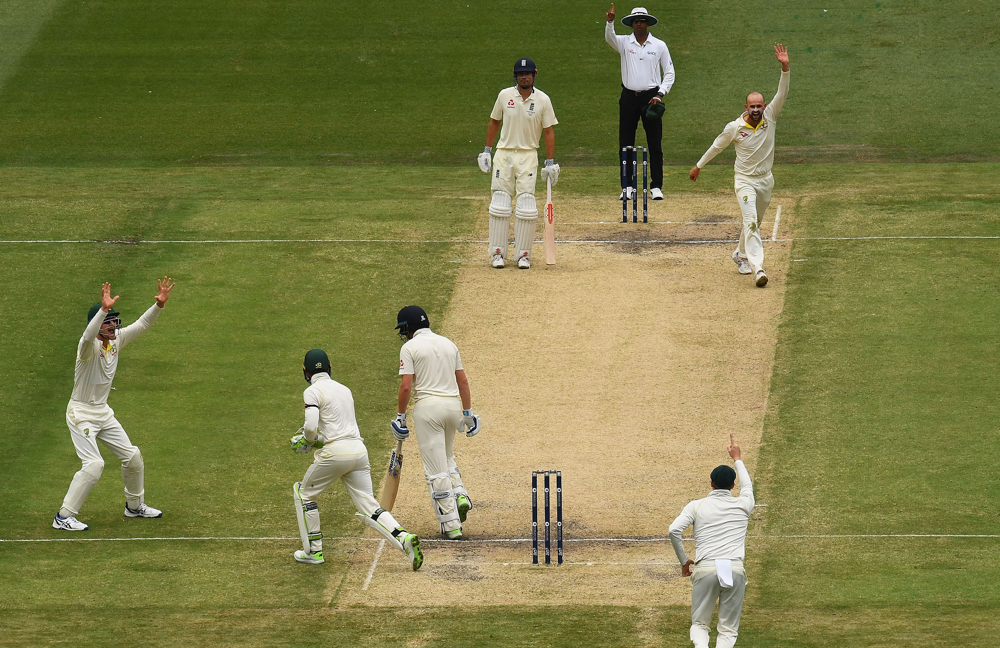

Cricket
Cricket is believed to have begun possibly as early as the 13th century as a game in which country boys bowled at a tree stump or at the hurdle gate into a sheep pen. This gate consisted of two uprights and a crossbar resting on the slotted tops; the crossbar was called a bail and the entire gate a wicket.
